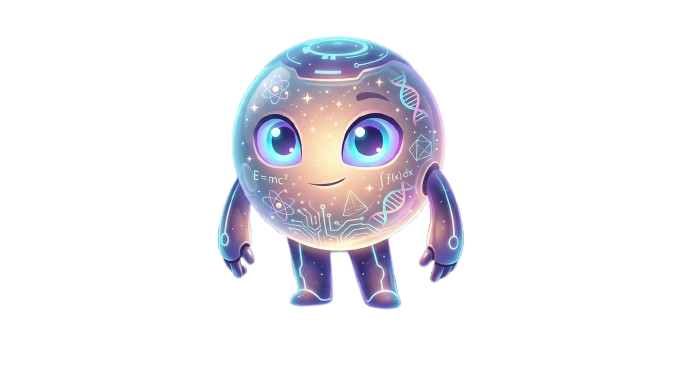

A plataforma educacional que reúne tudo em um só lugar. Videoaulas, experimentos remotos, jogos educativos e uma comunidade incrível esperando por você.

OMNIS é uma plataforma educacional integrada que conecta alunos ao conhecimento de forma dinâmica e inovadora. Aqui você aprende com vídeos, experimenta na prática, evolui com jogos e compartilha com a comunidade.
Aprenda jogando com jogos educativos incríveis e desafios interativos.
Realize experimentos remotos e descubra a ciência na prática.
Videoaulas completas com os melhores conteúdos educacionais.
Conecte-se com outros alunos, tire dúvidas e compartilhe conhecimento.